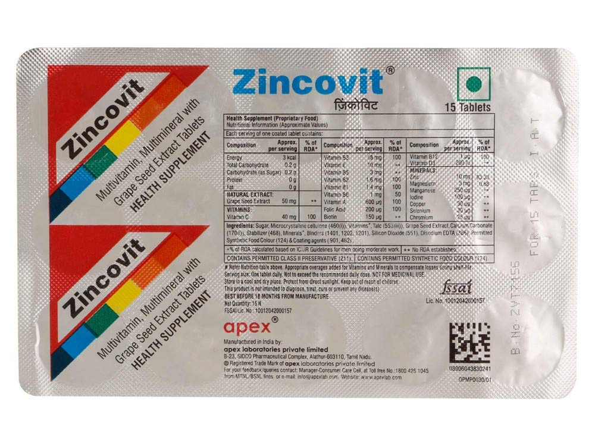
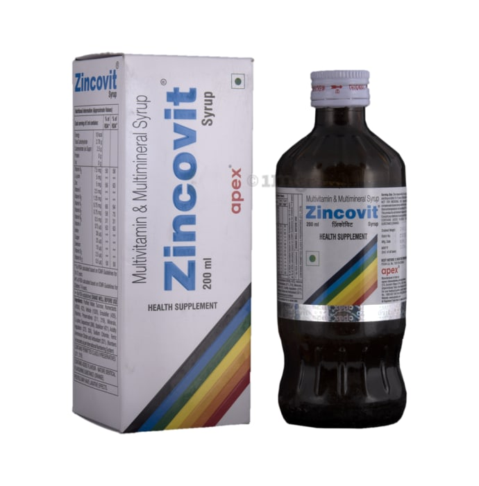
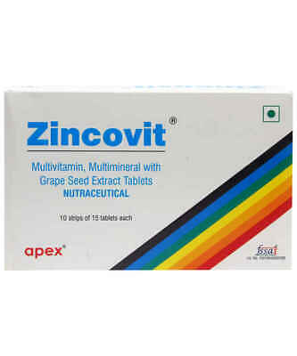
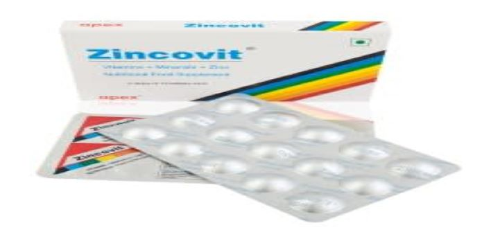

ZINCOVIT




×

ZINCOVIT Tablet is used for the short-term treatment of fever, and mild to moderate pain caused by several conditions such as arthritis, muscle aches, toothache, headache, backache etc. It is manufactured by Micro Labs Ltd in India. It is usually sold over-the-counter in most medicine shops and does not require a doctor’s prescription. It is one of the safer option for fever and pain relief.
Nature OfZINCOVIT: | Analgesic drug (pain reliever), antipyretic drug (fever reducer) |
|---|---|
Uses Of ZINCOVIT: | Fever , muscle pain, menstrual cramps, arthritis, painkiller,other pains |
Composition Of ZINCOVIT: | Paracetamol , Acetaminophen |
Side Effects Of ZINCOVIT: | Nausea, mouth ulcer, fatigue, anemia |
Precautions Of ZINCOVIT: | Not safe with alcohol, can affect pathology test results |
Uses and Benefits of ZINCOVIT: |
|---|
It is used for providing relief from pain and fever. ZINCOVITTablet is used as a painkiller. It majorly helps in getting rid of moderate pain which may be caused due to any of the following conditions:
For Fever:
It is prescribed for fever and it provides temporary relief. It doesn’t treat the underlying cause which results in fever.For Post Immunization Pyrexia :
In some cases, people get fever and pain after the vaccine. In such cases, ZINCOVIT MG Tablet is prescribed.For Muscle Pain :
The Tablet relieves moderate pain in the muscle including the pain due to Arthritis.For Menstrual Cramps :
It is proved to be beneficial in relieving pain associated with menstrual cramps.For Cephalalgia :
It is prescribed for headaches and migraine pain tooZINCOVIT Tablet is also used for the following conditions:
Arthritis Febrility Ear pain A headache Flu A doctor may prescribe the Tablet for other purposes as well if the patient is experiencing pain due to any reason.
Side-effects of ZINCOVIT: |
|---|
Consuming ZINCOVIT mg tablet can have side effects on some patients ranging from mild to severe, however, these are very rare to be seen and most patients do not experience any discomfort whatsoever upon taking medicine.
Some of the most common side effects of the medicine are mentioned below:
NauseaAllergic reactions on the skin
Gastric problems
Mouth ulcer
Fatigue
Anemia
Overuse or overdose can cause liver toxicity.
Another extremely rare but severe side effect of this medicine can be the Stevens-Johnson syndrome. It is a rare skin disorder with symptoms of flu, followed by a painful purplish or red rash that spreads on the body and forms blisters. If a patient experiences symptoms of the syndrome after having the tablet, he or she must immediately contact their doctor and seek immediate treatment. Apart from the listed side effects of the medicine, patients may also experience some other adverse reactions. In that case, they must immediately contact their doctor and get expert medical help.
Common Dosage of ZINCOVIT : |
|---|
This medicine can be obtained without a prescription, and it can be consumed when required by the patient. Missed dose of Dolo 650 mg tablet does not cause much problem, and it can be taken whenever the patient remembers about the missed dose. It is important to keep a gap of 6-8 hours between doses and not take more than 3gms in a day for adults. In children and underweight adults, the dose needs to be calculated on the basis of body weight. The signs of an overdose of ZINCOVIT Tablet are: Nausea
Loss of appetite
Stomach pain
Dark color urine
Yellowing of the skin and the eyes
Severe abdominal pain
Vomiting